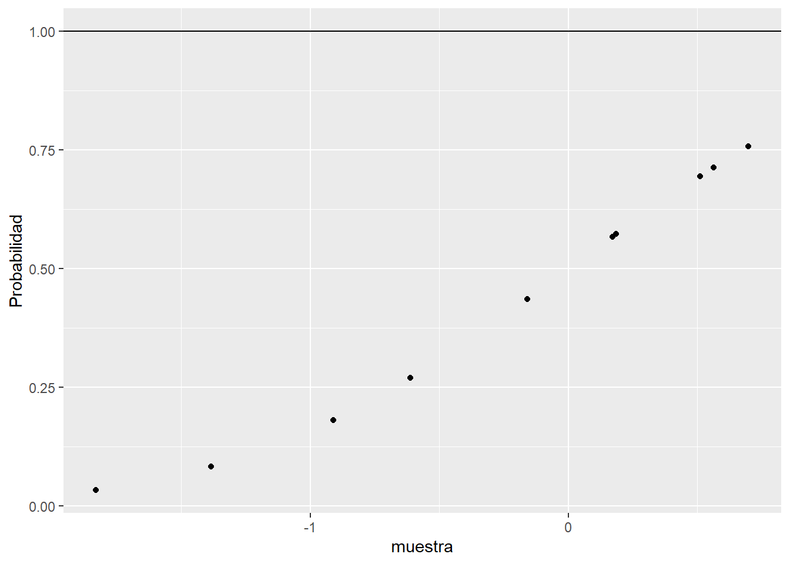
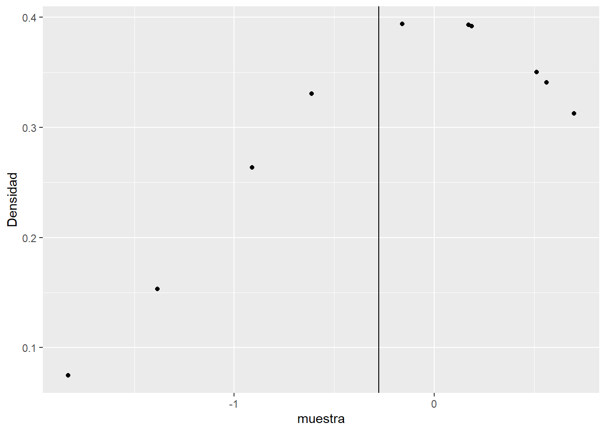
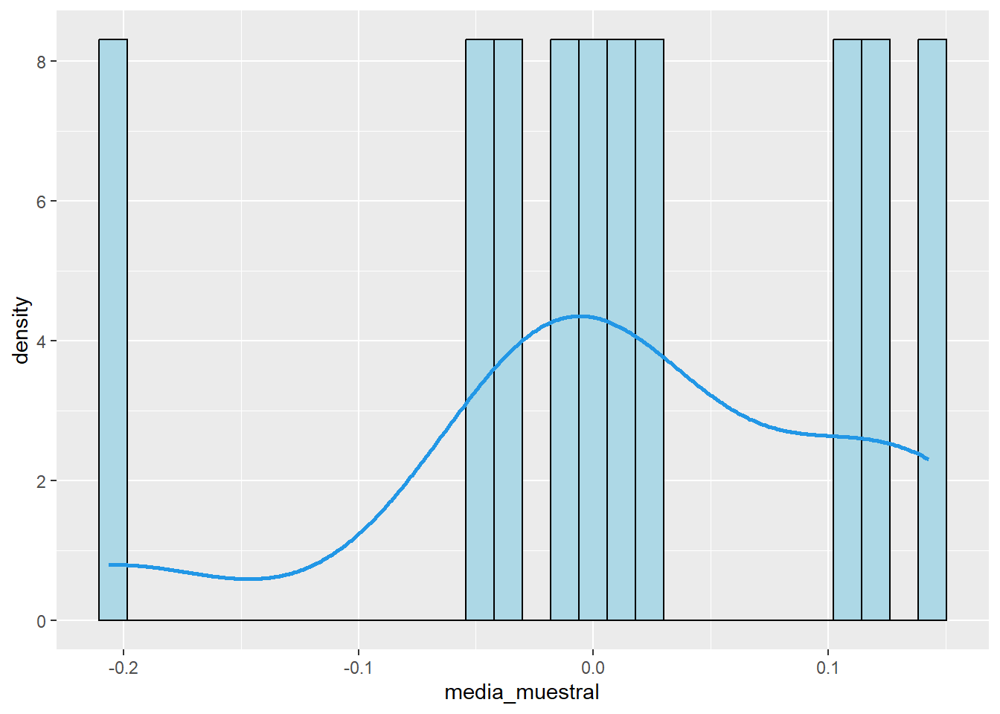
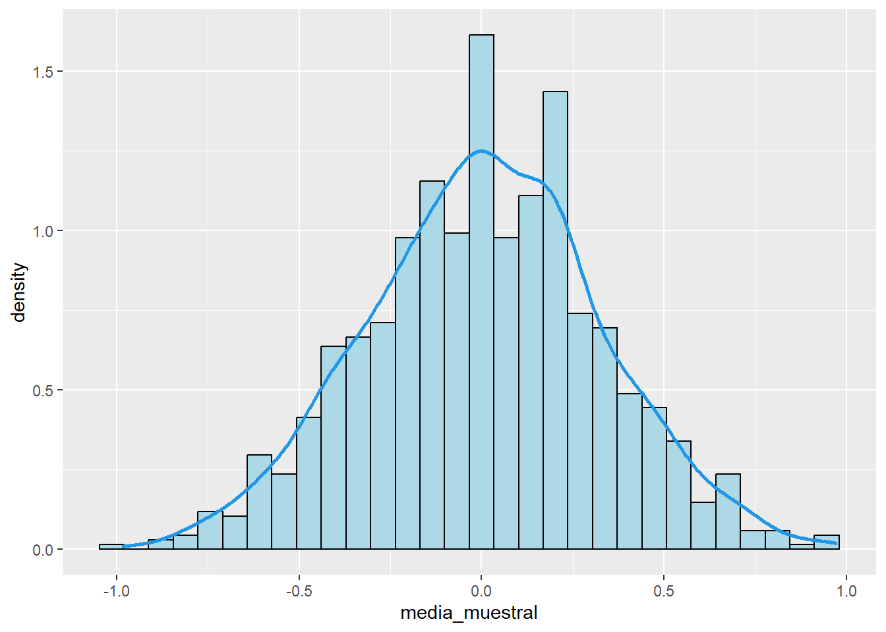
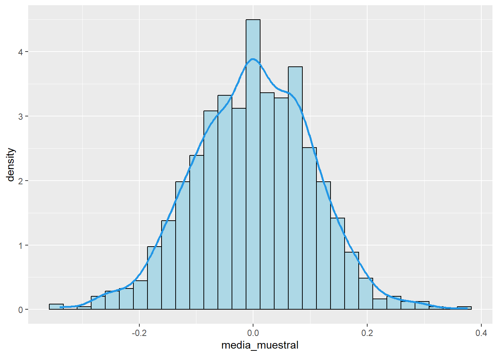

Supongamos que tenemos una distribución normal con media 0 y desvío 1. La variable aleatoria, toma infinitos valores entre \((-\infty;\infty)\).
Vamos a tomar 10 valores de la variables aleatoria en forma aleatoria.
## [1] 1.66393514 -0.03454867 -0.87091375 -0.67718207 0.15314271 -1.91904087
## [7] 1.68792468 -0.29008091 2.06632010 1.82830985## [1] -0.1598782 -1.8311445 -0.9112628 0.1859535 -0.6127159 0.6982681
## [7] 0.1702459 -1.3842398 0.5621496 0.5105721## muestra
## 1 -1.8311445
## 2 -1.3842398
## 3 -0.9112628
## 4 -0.6127159
## 5 -0.1598782
## 6 0.1702459
## 7 0.1859535
## 8 0.5105721
## 9 0.5621496
## 10 0.6982681Para cada valor en la muestra vamos a calcular su probabilidad con pnorm.
Para ello, al dataframe le agregamos una columna que se llame probabilidad. Sugerencia, utilizar la funcion mutate().
## muestra Probabilidad
## 1 -1.8311445 0.03353949
## 2 -1.3842398 0.08314252
## 3 -0.9112628 0.18107846
## 4 -0.6127159 0.27003209
## 5 -0.1598782 0.43648850
## 6 0.1702459 0.56759160
## 7 0.1859535 0.57375939
## 8 0.5105721 0.69517464
## 9 0.5621496 0.71299295
## 10 0.6982681 0.75749523Calculamos la densidad para cada punto y se lo agregamos al dataframe
## muestra Probabilidad Densidad
## 1 -1.8311445 0.03353949 0.07460978
## 2 -1.3842398 0.08314252 0.15304880
## 3 -0.9112628 0.18107846 0.26338499
## 4 -0.6127159 0.27003209 0.33066518
## 5 -0.1598782 0.43648850 0.39387603
## 6 0.1702459 0.56759160 0.39320257
## 7 0.1859535 0.57375939 0.39210411
## 8 0.5105721 0.69517464 0.35018963
## 9 0.5621496 0.71299295 0.34063471
## 10 0.6982681 0.75749523 0.31263225Mostramos en tabla el dataframe
| muestra | Probabilidad | Densidad |
|---|---|---|
| -1.8311445 | 0.0335395 | 0.0746098 |
| -1.3842398 | 0.0831425 | 0.1530488 |
| -0.9112628 | 0.1810785 | 0.2633850 |
| -0.6127159 | 0.2700321 | 0.3306652 |
| -0.1598782 | 0.4364885 | 0.3938760 |
| 0.1702459 | 0.5675916 | 0.3932026 |
| 0.1859535 | 0.5737594 | 0.3921041 |
| 0.5105721 | 0.6951746 | 0.3501896 |
| 0.5621496 | 0.7129930 | 0.3406347 |
| 0.6982681 | 0.7574952 | 0.3126323 |
Calculamos el desvío y la media de la muestra
Lo presentamos en un cuadro de salida
resumen_data <- data.frame(Tamaño_muestral=n,Media_muestral=x_raya,Desvio_muestral=s_d)
resumen_data <- resumen_data %>%
mutate(Numero_muestra=nrow(resumen_data))
#reordeno
resumen_data <- resumen_data %>%
select(Numero_muestra,Tamaño_muestral,Media_muestral,Desvio_muestral)
resumen_data %>%
kbl() %>%
kable_styling(full_width = F)| Numero_muestra | Tamaño_muestral | Media_muestral | Desvio_muestral |
|---|---|---|---|
| 1 | 10 | -0.2772052 | 0.8730535 |
Graficamos la probabilidad vs los cuantiles
g1 <- ggplot(data = data, mapping = aes(x=muestra,y=Probabilidad))+
geom_point()+
geom_hline(yintercept = 1)
g1
Graficamos la densidad en funcion de los puntos muestrales.
g2 <- ggplot(data = data, mapping = aes(x=muestra,y=Densidad))+
geom_point()+
geom_vline(xintercept = x_raya)
g2
Repetimos todo, tomando 10 muestras de tamaño 100.
Necesitamos de una función que nos ayude con las muestras y organice un dataframe que registre para cada muestra tomada, su media y desvío.
resumen=function(n,mu,sigma){
muestra=rnorm(n,mu,sigma)
media_muestral=mean(muestra)
desvio_muestral=sd(muestra)
return(salida=data.frame(media_muestral=media_muestral,desvio_muestral=desvio_muestral))
}m1 <- resumen(100,0,1)
m2 <- resumen(100,0,1)
m3 <- resumen(100,0,1)
m4 <- resumen(100,0,1)
m5 <- resumen(100,0,1)
m6 <- resumen(100,0,1)
m7 <- resumen(100,0,1)
m8 <- resumen(100,0,1)
m9 <- resumen(100,0,1)
m10 <- resumen(100,0,1)
res <- rbind(m1,m2,m3,m4,m5,m6,m7,m8,m9,m10)
res <- res %>%
mutate(muestra_numero=1:nrow(res)) %>%
dplyr::arrange(media_muestral)
res %>%
kbl()%>%
kable_styling(full_width = F)| media_muestral | desvio_muestral | muestra_numero |
|---|---|---|
| -0.2062770 | 0.9682540 | 3 |
| -0.0450118 | 1.0595393 | 7 |
| -0.0320437 | 0.9996589 | 8 |
| -0.0117769 | 1.0105258 | 10 |
| -0.0014888 | 0.9752009 | 6 |
| 0.0104717 | 1.0639763 | 4 |
| 0.0244895 | 1.0879497 | 9 |
| 0.1139295 | 1.1032260 | 2 |
| 0.1253598 | 1.0810817 | 5 |
| 0.1427205 | 1.0175417 | 1 |
Graficamos un histograma de las medias…
g <- ggplot(data = res, mapping = aes(x=media_muestral))+
geom_histogram(aes(y = ..density..),
colour = 1, fill = "lightblue")+
geom_density(lwd = 1,colour=4)## Warning: The dot-dot notation (`..density..`) was deprecated in ggplot2 3.4.0.
## i Please use `after_stat(density)` instead.
## This warning is displayed once per session.
## Call `lifecycle::last_lifecycle_warnings()` to see where this warning was
## generated.
Qué pasa si queremos repetir este proceso 100 veces? tomar 100 muestras de tamaño 10 o de tamaño 100 o de tamaño 1000?
Definamos una función que haga esta simulación…
# Definimos la función que realiza las iteraciones
simulacion <- function(I, n, mu, sigma) {
#En primer lugar, definimos la función resumen, dentro de la funcion generalizadora
resumen=function(n,mu,sigma){
muestra=rnorm(n,mu,sigma)
media_muestral=mean(muestra)
desvio_muestral=sd(muestra)
return(salida=data.frame(media_muestral=media_muestral,desvio_muestral=desvio_muestral))
}
# Creaamos un Dataframe vacío para almacenar los resultados
resultado <- data.frame()
# Creamos un ciclo for que en cada iteracción, genere una muestra y calcule
for (i in 1:I) {
# Llamamos a la función resumen y obtenemos el dataframe en cada iteracion
df <- resumen(n, mu, sigma)
# Unificamos el Dataframe actual con el dataframe vacío llamado resultado
resultado <- rbind(resultado, df)
}
# Reiniciamos los índices del Dataframe resultado
rownames(resultado) <- NULL
# Agregamos una columna con el tamaño muestral
resultado <- resultado %>%
mutate(Muestreo_numero=1:nrow(resultado))
#Reordenamos las columnas del dataframe
resultado <- resultado %>%
select(Muestreo_numero,media_muestral,desvio_muestral)
return(resultado)
}Ahora aplicamos la función generalizadora para tomar 1000 muestras de tamaño 10, de la variable normal con media \(\mu=0\) y desvío \(\sigma=1\)
I <- 1000 #cantidad de iteraciones
n <- 10 #tamaño de muestra
mu <- 0
sigma <- 1
m <- simulacion(I,n,mu,sigma)
head(m)## Muestreo_numero media_muestral desvio_muestral
## 1 1 0.05015372 0.7449338
## 2 2 -0.12684357 0.8934336
## 3 3 -0.42796020 0.8068114
## 4 4 -0.01795588 0.9009502
## 5 5 0.27956614 1.1238742
## 6 6 -0.06176329 1.1509196Graficamos un histograma de las medias…
g <- ggplot(data = m, mapping = aes(x=media_muestral))+
geom_histogram(aes(y = ..density..),
colour = 1, fill = "lightblue")+
geom_density(lwd = 1,colour=4)
Repetimos: tomar 1000 muestras de tamaño 100, de la variable normal con media \(\mu=0\) y desvío \(\sigma=1\).
I <- 1000 #cantidad de iteraciones
n <- 100 #tamaño de muestra
mu <- 0
sigma <- 1
m <- simulacion(I,n,mu,sigma)
head(m)## Muestreo_numero media_muestral desvio_muestral
## 1 1 -0.11156163 0.9577132
## 2 2 0.08389017 0.9683593
## 3 3 0.10659613 1.0659312
## 4 4 0.08786761 0.8613511
## 5 5 0.08008280 0.8501885
## 6 6 0.07880916 0.8883184Graficamos un histograma de las medias
g <- ggplot(data = m, mapping = aes(x=media_muestral))+
geom_histogram(aes(y = ..density..),
colour = 1, fill = "lightblue")+
geom_density(lwd = 1,colour=4)
Con estos ejemplos, observamos que cada muestra aporta un valor de media. Los valores de media, tienden a distribuirse normalmente.
Esto nos conduce a pensar que la media es una variable aleatoria que se distribuye normalmente.